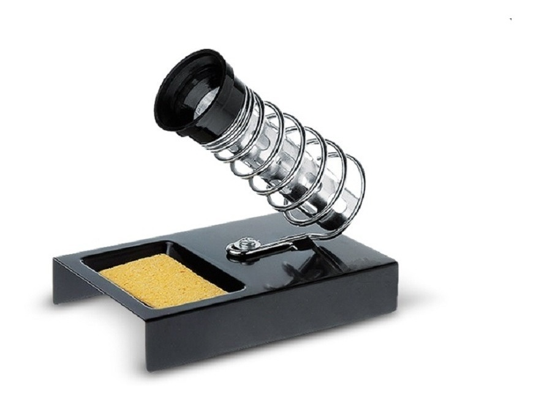

Soldador Electrico
El cautín es un soldador eléctrico, una herramienta muy sencilla que posee un conjunto de elementos que al estar correctamente conectados van a generar en una barrita de metal el calor suficiente para poder derretir los distintos metales como el estaño y el oro, utilizados para las soldaduras de los circuitos eléctricos y electrónicos. También es nombrado soldador manual y soldador de lápiz.
Es utilizado para soldar con estaño, es una herramienta de trabajo básica para cualquier experimentador o practicante de electrónica. Los cautines eléctricos generan calor, al pasar la corriente por la resistencia hace que la punta se caliente y alcance la temperatura indicada, generalmente un alambre de níquel-cromo de alta resistencia devanado en forma de bobina alrededor de un núcleo de cobre. El calor desarrollado en este último se trasmite por conducción a la punta de la herramienta, hecha de acero inoxidable, y de esta a los puntos de unión y a la soldadura blanda la cual se realiza a temperatura de unos 300° C.
Tipos de Soldadores
Soldador de Lapiz
Es un clasico soldador con forma de lapiz de 30w. Su calentamiento es permanente y posee una alta inercia termica. Tanto en el momento de la soldadura como en las pausas de esta labor, el soldador permanece conectado a la corriente electrica.
Soldador de Pistola
Es un soldador en que la punta se calienta por el efecto de una gran corriente que pasa por ella (el abultado mango lleva dentrp un transformador que la produce). Resulta util para trabajos esporadicos ya que se calienta instantaneamente. No se usa mucho en electronica porque la punta no es bastante fina y precisa.
Soportes
Son bases resistentes que necesita el soldador para mantener la punta caliente (a unos 250~300°C), sobre esta base y dejarlo durante el tiempo que no se usa y asi evitar quemar la mesa de trabajo.
Sporte Tipico para Soldadores

Estaño
El estaño para soldar no es estaño puro, sino una aleación, normalmente de estaño y plomo. La composición ideal es del 60% de estaño por un 40% de plomo con adición de resina para facilitar el estañado. Algo que debéis entender es que la calidad del estaño, a diferencia de la calidad del soldador, sí es crucial en una buena soldadura. Por tanto, independientemente de si soldáis con hilo o con pasta, es bueno estirarse un poco y comprar un estaño de calidad.
Pasta para Soldar
La función de la Pasta para Soldar Estaño de Indepp es facilitar la distribución uniforme del estaño fundido sobre las superficies a unir. Evita también la oxidación producida por la elevada temperatura del soldador.
Menu
Palabras Sabias
 La calidad nunca es un accidente; siempre es el resultado de un esfuerzo de la inteligencia..
La calidad nunca es un accidente; siempre es el resultado de un esfuerzo de la inteligencia..
John Ruskin